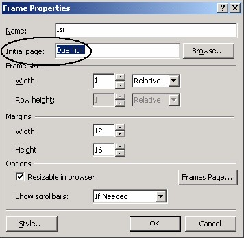
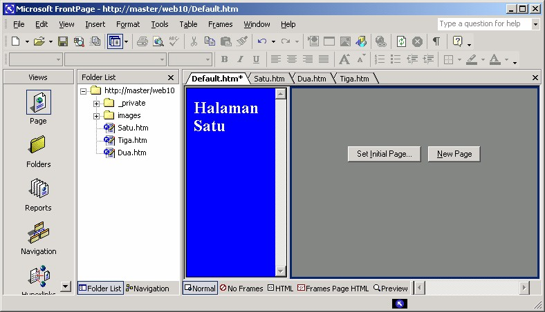
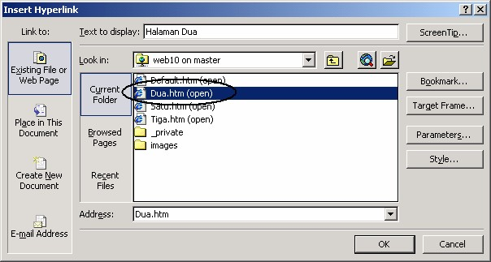
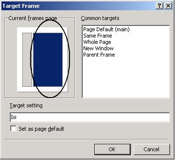
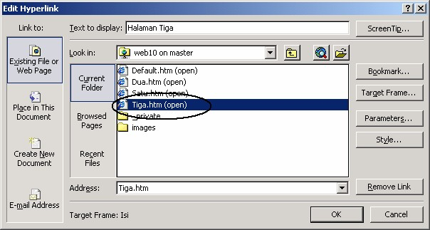
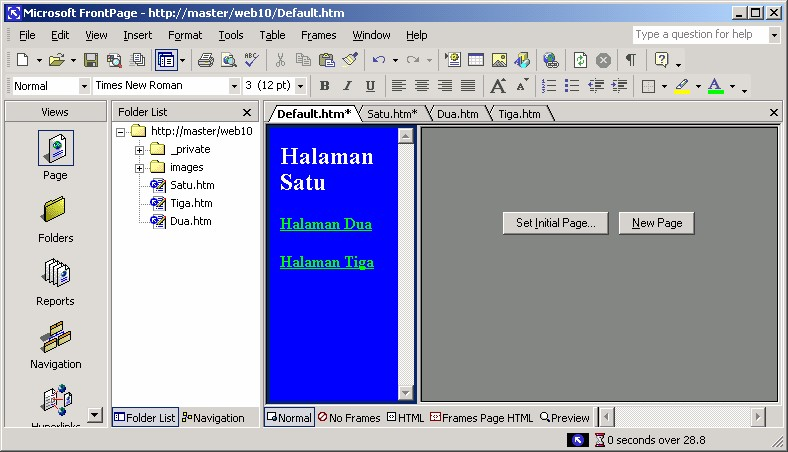
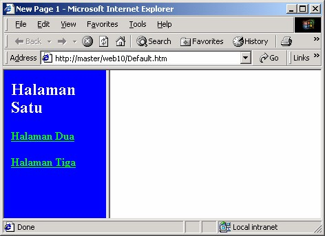
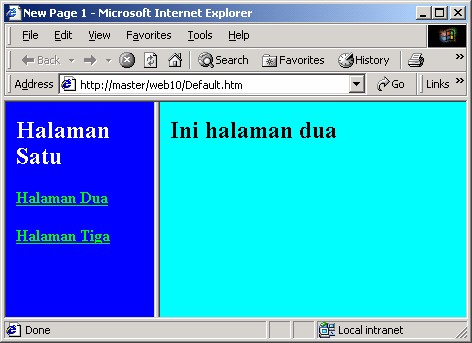
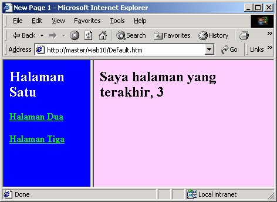

3 Mengganti halaman pengisi
Kita bisa menggunakan frame Daftar (kiri) sebagai frame daftar isi, yang
mengandung daftar link-link ke dokumen tersendiri.
Kemudian pada frame Isi (kanan) kita atur agar bisa menampilkan halaman sesuai
link yang di-klik pada frame Daftar.
Hal seperti ini sering dijumpai, yaitu frame kiri (Daftar) bertugas sebagai link bar
vertikal dan frame kanan (Isi) bertugas menampilkan halaman atau dokumen yang
dipilih dari frame kiri.
Baiklah, mari kita buat susunan seperti itu:
1. Klik kanan frame kanan (Isi), lalu klik Properties. Muncul Kotak dialog
Properties.
2. Pada kotak isian Initial Page, hapuslah nama halaman tujuan. Lihat Gambar
10.10 berikut:

Gambar 10.10 Hapus halaman tujuan
3. Klik OK. Kotak dialog Frame Properties menutup dan frame Isi sekarang
kosong.

Gambar 10.11 Frame Isi kosong
4. Tuliskan teks: “Halaman dua” pada frame Daftar.
5. Sorotlah teks tersebut lalu klik tombol Insert Hyperlink. Muncul kotak dialog
Insert Hyperlink.

Gambar 10.12 Pilihan halaman Dua.htm
6. Pilihlah icon halaman Dua.htm, lihat Gambar 10.12.
7. Lalu klik tombol Target Frames, muncul kotak dialog Target Frames.

Gambar 10.13 Kotak dialog Target Frames
8. Pada kotak Current frames page, klik frame kanan (Isi), lihat Gambar 10.13,
lalu klik OK. Kembali ke kotak dialog Insert Hyperlink. Klik OK.
9. Ulangi membuat teks, kali ini: “Halaman Tiga”. Lalu sorotlah teks tersebut dan
klik tombol Insert Hyperlink. Muncul kotak dialog Insert Hyperlink.

Gambar 10.14 Pilihan halaman Tiga.htm
10. Pilihlah icon halaman Tiga.htm, lihat Gambar 10.14.
11. Lalu klik tombol Target Frames, muncul kotak dialog Target Frames.
12. Pada kotak Current frames page, klik frame kanan (Isi), lalu klik OK. Kembali
ke kotak dialog Insert Hyperlink. Klik OK.
13. Barangkali Anda perlu mengganti warna font kedua teks link agar lebih kontras
dengan warna latar belakang biru.
14. Simpanlah situs dengan File è Save.

Gambar 10.15 Hasil pemasangan link pada FrontPage XP
Hasilnya tidak bisa Anda lihat langsung pada FrontPage XP, bukalah lewat browser
dengan klik tombol Preview in browser.
Setelah terbuka di browser, tampak bahwa frame Isi masih kosong.

Gambar 10.16 Frame Isi masih kosong
Klik link “Halaman Dua”, maka frame Isi akan menampilkan halaman Dua.htm.

Gambar 10.17 Halaman dua tampil di frame Isi
Klik link “Halaman tiga”, maka frame Isi akan menampilkan halaman Tiga.htm.

Gambar 10.18 Halaman tiga tampil di frame Isi
Copyright © Herlan Lesmana
Created with the Freeware Edition of HelpNDoc: Full featured Help generator